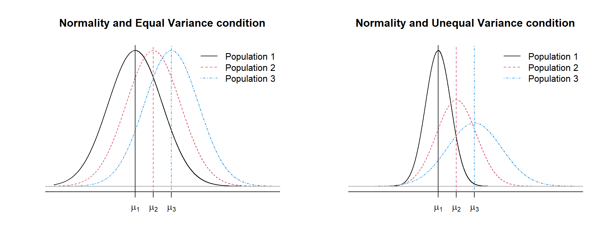
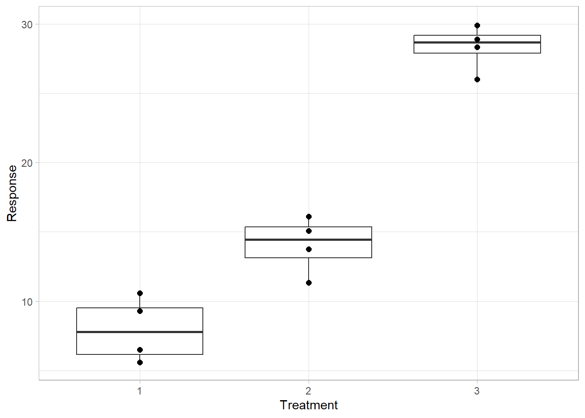
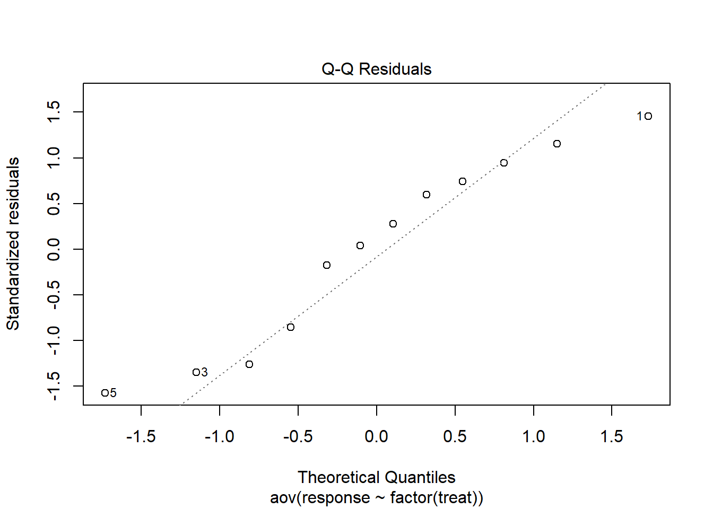
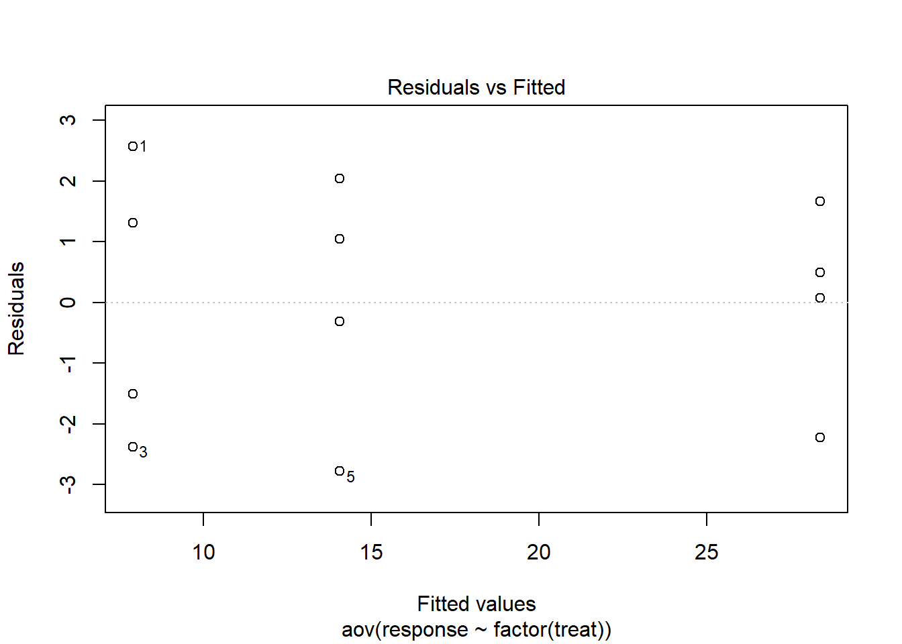
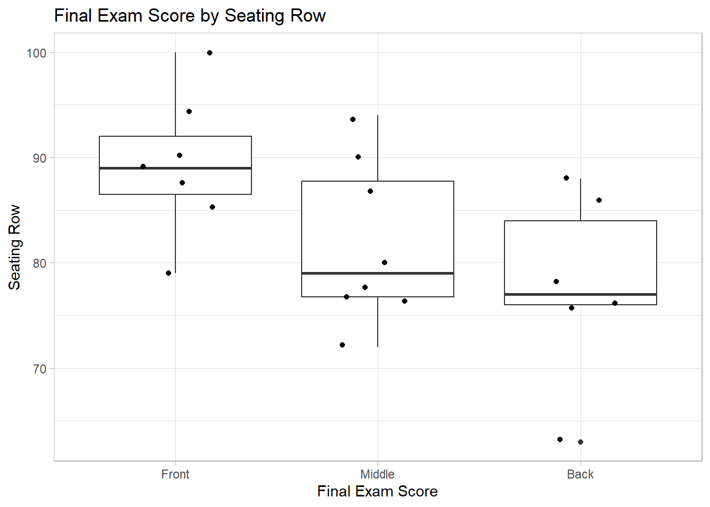
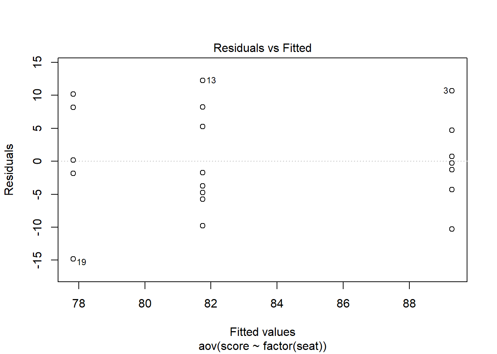
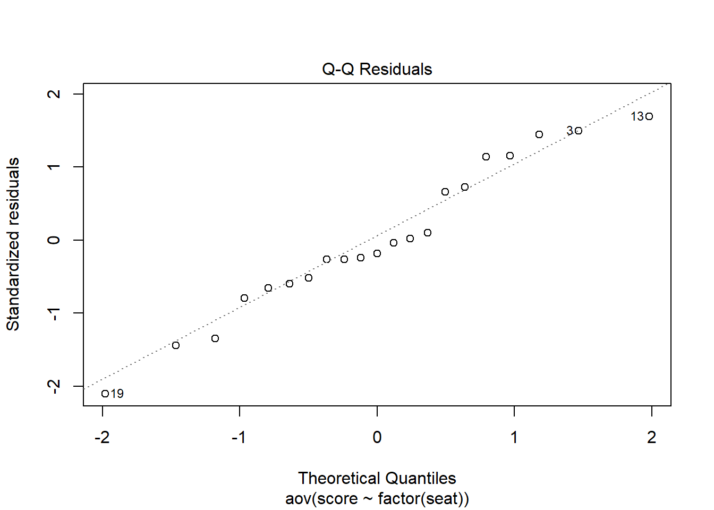
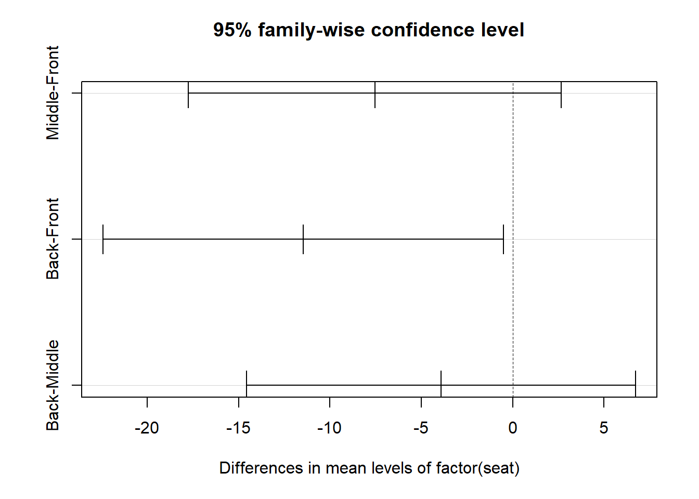

Conditions and Post-Hoc Tests for ANOVA
1 Conditions for ANOVA
As in the two-sample t-test, the ANOVA requires two conditions be met in order to trust the results of the test.
Let \(\mu_j\) and \(\sigma_j\) be the population mean and standard deviation of Population \(j\) for \(j = 1, 2, \dots, g\).
- Assume that a simple random sample is taken from each population which follows a normal distribution \(N(\mu_j, \sigma_j)\), and it is referred to as the normality condition.
- Further assume that \(\sigma_1^2 = \sigma_2^2 = \dots = \sigma_g^2\), it is referred to as the equal variance condition, and we simply denote the equal variance by \(\sigma^2\).
The normality and equal variance condition are graphically shown below for \(g = 3\) groups.

1.1 Normality/Sufficient Sample Size Condition
We do not evaluate each group for normality like we did in the two-sample t-test. Instead of we evaluate the normality of the residuals
To use the F-distribution as a model for the null distribution: Each group meets the minimum sufficient sample size, depending on whether the residuals are normally distributed, and residuals display equal variance.
- Check the QQ Plots for Normality of Residuals
- Check the sample size for each group is sufficiently large
- If the residuals are not normally distributed, then the minimum sufficient sample size for each group is \(n_i>30\)
- If the residuals are normally distributed, then the minimum sufficient sample size for each group is \(n_i>10\)
- If the residuals are not normally distributed, then the minimum sufficient sample size for each group is \(n_i>30\)
To illustrate the idea of why we can check the normality of residuals let’s look at a simple data set.
toy <- read_csv("data/toy.csv", show_col_types = FALSE)
head(toy, 12)# A tibble: 12 × 2
response treat
<dbl> <dbl>
1 10.5 1
2 9.21 1
3 5.52 1
4 6.39 1
5 11.3 2
6 16.1 2
7 13.8 2
8 15.1 2
9 26.2 3
10 28.9 3
11 28.5 3
12 30.0 3df_stats(response ~ treat, data = toy) response treat min Q1 median Q3 max mean sd n missing
1 response 1 5.52 6.1725 7.80 9.5250 10.47 7.8975 2.328481 4 0
2 response 2 11.29 13.1425 14.44 15.3675 16.11 14.0700 2.088748 4 0
3 response 3 26.16 27.8850 28.67 29.1725 30.05 28.3875 1.630284 4 0gf_boxplot(response ~ factor(treat),
data = toy,
xlab = "Treatment",
ylab = "Response") |>
gf_jitter(width = 0, size = 2)
Here is our analysis of variance:
aov_toy <- aov(response ~ factor(treat), data = toy)
anova(aov_toy)Analysis of Variance Table
Response: response
Df Sum Sq Mean Sq F value Pr(>F)
factor(treat) 2 883.91 441.95 106.56 5.426e-07 ***
Residuals 9 37.33 4.15
---
Signif. codes: 0 '***' 0.001 '**' 0.01 '*' 0.05 '.' 0.1 ' ' 1A residual is just the difference between a data value and the sample mean of its group. If the data is from a normal distribution then \(x_i - \bar{x} \sim N(0, MSE)\)
toy |>
group_by(treat) |>
mutate(group_avg = mean(~response)) |>
ungroup() |>
mutate(residual = response - group_avg,
standardized_residuals = (residual/sd(~residual))) |>
slice_head(n = 12)# A tibble: 12 × 5
response treat group_avg residual standardized_residuals
<dbl> <dbl> <dbl> <dbl> <dbl>
1 10.5 1 7.90 2.57 1.40
2 9.21 1 7.90 1.31 0.712
3 5.52 1 7.90 -2.38 -1.29
4 6.39 1 7.90 -1.51 -0.818
5 11.3 2 14.1 -2.78 -1.51
6 16.1 2 14.1 2.04 1.11
7 13.8 2 14.1 -0.310 -0.168
8 15.1 2 14.1 1.05 0.570
9 26.2 3 28.4 -2.23 -1.21
10 28.9 3 28.4 0.492 0.267
11 28.5 3 28.4 0.0725 0.0394
12 30.0 3 28.4 1.66 0.902 The fastest way to plot a QQ plot for the residuals is to pull it from the output of the aov() function.
plot(aov_toy, 2)
1.2 Equal Variance of Residuals
One of the central assumptions of an ANOVA and other parametric tests is that the within-group variances of the groups are all the same. If the variances within the groups are different enough from each other, then MSE will be over-estimated and the F-statistic will be deflated, which will lead to a larger p-value than is true and may result in a Type II Error.
1.2.1 Graphic Test
We can test the condition of the homogeneity (equality) of variances, or the condition that population variances are equal using the Residual vs. Fitted Plot. The graphic test is a residual plot. In general, the equal variance condition is satisfied if the residuals are similarly spread around zero, indicating equal dispersion of the values in each group about their respective means.
plot(aov_toy, 1, add.smooth = FALSE)
Describe the Following:
- describe spread of residuals around 0
- pattern discussed relative to sample size per group
- evaluation if spread of residuals the same across each group
- If the spread of one group is more than 2x wider than the other groups, depending on the group sample size, then there is not equal variance of residuals across groups.
- A single outlier is not sufficient evidence of differences among the spread of the residuals.
2 Case Study: Exam Scores and Seats
College students choose their seats in the classroom, and they tend to choose the same seat or nearby throughout the semester. A professor, who does not designate students’ seats, hypothesized that their final exam scores differ by seating rows. The dataset \(\texttt{seat.csv}\) is a sample of \(m = 21\) students. The column \(\texttt{score}\) is the final exam score of each student (numeric variable), and the column \(\texttt{seat}\) is the student’s seat (\(\texttt{Front}\), \(\texttt{Middle}\), and \(\texttt{Back}\)). The variable \(\texttt{seat}\) can be treated as an ordinal categorical variable, and we can order the three levels using the \(\texttt{factor}\) function. (Otherwise, it is ordered as \(\texttt{Back}\), \(\texttt{Front}\), and \(\texttt{Middle}\) alphabetically.)
exam_score <- read_csv("data/seat.csv", show_col_types = FALSE) ### read csv file
head(exam_score)# A tibble: 6 × 3
id score seat
<dbl> <dbl> <chr>
1 1 89 Front
2 2 94 Front
3 3 100 Front
4 4 88 Front
5 5 85 Front
6 6 79 Front#reorder seat types
exam_score <- exam_score |>
mutate(seat = factor(seat, levels = c("Front", "Middle", "Back")))2.1 Data Collection
What type of data collection method was used?
How does that impact our ability to generalize to the population of interest?
How does that impact our ability to infer cause-and-effect?
2.2 Summary Statistics
df_stats(score ~ seat, data = exam_score) ### descriptive statistics response seat min Q1 median Q3 max mean sd n missing
1 score Front 79 86.50 89 92.00 100 89.28571 6.626067 7 0
2 score Middle 72 76.75 79 87.75 94 81.75000 7.685794 8 0
3 score Back 63 76.00 77 84.00 88 77.83333 8.908797 6 0gf_boxplot(score ~ seat, data = exam_score,
title = "Final Exam Score by Seating Row",
xlab = "Final Exam Score",
ylab = "Seating Row",
outlier.shape = NA) |>
gf_jitter(width = 0.2)
Evaluate the summary statistics and visualization - do they support idea that seat position impacts the final exam score?
2.3 Hypotheses
Set up the null and alternative hypothesis.
2.4 ANOVA
Here is the analysis of variance
exam_aov <- aov(score ~ factor(seat), data = exam_score) ### ANOVA calculations
anova(exam_aov) ### print ANOVA tableAnalysis of Variance Table
Response: score
Df Sum Sq Mean Sq F value Pr(>F)
factor(seat) 2 448.81 224.405 3.7618 0.04315 *
Residuals 18 1073.76 59.653
---
Signif. codes: 0 '***' 0.001 '**' 0.01 '*' 0.05 '.' 0.1 ' ' 1Interpret the p-value in the context of the scenario.
Evaluate the strength of evidence of the p-value
2.5 Equal Variance Condition
Here is our Residual Plot:
plot(exam_aov, 1, add.smooth = FALSE)
Evaluate if the condition of equal variances across groups is met.
2.6 Normality Condition
Here is the QQ Plot:
plot(exam_aov, 2)
Evaluate the QQ Plot to determine if the normality condition is met.
Based on your evaluation of the QQ Plot, do we have sufficient sample size to meet the conditions to use the parametric ANOVA test?
3 Post-Hoc Tests
For the purpose of demonstration, suppose we want to compare three averages \(\mu_1\), \(\mu_2\), and \(\mu_3\). The conclusion of ANOVA is either \(H_0\): \(\mu_1 = \mu_2 = \mu_3\) or \(H_1\): \(\mu_1 \ne \mu_2\), \(\mu_1 \ne \mu_3\), or \(\mu_2 \ne \mu_3\). If \(H_1\) is concluded at a significance level of \(\alpha\), it does not specify which pairwise difference(s) are statistically discernible. The Tukey’s method (also known as the Tukey’s honestly significant differences) is a post-hoc test (identifying significant pairwise difference(s)) when the conclusion of ANOVA is \(H_1\).
4 Family-wise Confidence Level
A general form of a confidence interval (CI) for any unknown parameter is
\[ \texttt{point} \,\, \texttt{estimate} \,\, \pm \,\, c \times \texttt{SE} \tag{1}\]
where \(c\) is the critical value which reflects a confidence level \(1 - \alpha\) and \(\texttt{SE}\) is the standard error which quantifies the uncertainty about point estimation. If a CI for \(\mu_j - \mu_k\) does not include zero at a confidence level of \(1 - \alpha\), it is equivalent to concluding \(\mu_j - \mu_k \ne 0\) (a two-sided test) at a significance level of \(\alpha\). It is a natural idea to build three 95% CIs, one for \(\mu_1 - \mu_2\), one for \(\mu_1 - \mu_3\), and one for \(\mu_2 - \mu_3\), and determine which pairwise difference(s) are statistically discernible.
Here is a challenge. When there are three independent CIs for \(\mu_1 - \mu_2\), \(\mu_1 - \mu_3\), and \(\mu_2 - \mu_3\), where each CI captures the true value of \(\mu_j - \mu_k\) with a probability of 0.95, all three independent CIs capture the true values of \(\mu_1 - \mu_2\), \(\mu_1 - \mu_3\), and \(\mu_2 - \mu_3\) with a probability of \((0.95)^3 = 0.857\). In this case, we say that we have a family-wise confidence level of 0.857. In general, a family-wise confidence level is the probability that all CIs capture the true parameter values. If we want a family-wise confidence level of 0.95, the confidence level for each individual CI should be \((0.95)^{1/3} = 0.983\). In general, when we want \(k\) independent CIs at a family-wise confidence level of \(1 - \alpha\), each confidence interval should have a confidence level of \((1 - \alpha)^{1/k}\). This method is known as the Sidak’s method.
This method is brilliant, but there are two caveats. The first caveat is that CIs for multiple pairwise differences are not independent. The second caveat, which follows from the first caveat, is that Sidak’s method is conservative. In other words, it results in wide CIs (imprecise interval estimation).
5 Tukey’s Honestly Significance Difference (HSD)
John Tukey (1915-2000), an American mathematician and statistician, suggested a method of accurately calculating the critical value \(c\) and the standard error \(\texttt{SE}\) in Equation 1. The formula of \(c\) is complicated, but \(c\) can be calculated by \(\texttt{qtukey}( 1 - \alpha, \, \texttt{nmeans} = g, \, \texttt{df} = \nu_w ) \, / \, \texttt{sqrt}(2)\) where \(1 - \alpha\) is a fixed family-wise confidence level, \(g\) is the number of groups, and \(\nu_w = m - g\) is the within-group degrees of freedom (\(m\) is the total sample size). The standard error is estimated as
\[ \texttt{SE} = \sqrt{ \texttt{MSW} \left( \frac{1}{n_j} + \frac{1}{n_k} \right) } \]
where \(\texttt{MSW}\) is the within-group mean square (from the ANOVA table) and \(n_j\) and \(n_k\) are the sample sizes in group \(j\) and \(k\), respectively. This method is known as the Tukey’s method or Tukey’s honestly significant difference (HSD).
Note: As the ANOVA test, the Tukey’s HSD is valid under the normality and equal variance conditions.
Let us apply the Tukey’s HSD to \(\texttt{seat.csv}\). Let \(\mu_1\), \(\mu_2\), and \(\mu_3\) be the unknown expected exam score for \(\texttt{Front}\), \(\texttt{Middle}\), and \(\texttt{Back}\), respectively. Below are the descriptive statistics, ANOVA table, and critical value.
TukeyHSD(exam_aov) Tukey multiple comparisons of means
95% family-wise confidence level
Fit: aov(formula = score ~ factor(seat), data = exam_score)
$`factor(seat)`
diff lwr upr p adj
Middle-Front -7.535714 -17.73754 2.6661089 0.1716673
Back-Front -11.452381 -22.41901 -0.4857505 0.0398778
Back-Middle -3.916667 -14.56225 6.7289194 0.6234241At a family-wise confidence level of 0.95, Tukey’s CIs for \(\mu_2 - \mu_1\), \(\mu_3 - \mu_1\), and \(\mu_3 - \mu_2\) can be calculated as follows:
CI for \(\mu_2 - \mu_1\): \((81.750 - 89.286) \, \pm \, 2.552 \sqrt{59.653 \left( \frac{1}{8} + \frac{1}{7} \right) }\)
CI for \(\mu_3 - \mu_1\): \((77.833 - 89.286) \, \pm \, 2.552 \sqrt{59.653 \left( \frac{1}{6} + \frac{1}{7} \right) }\)
CI for \(\mu_3 - \mu_2\): \((77.833 - 81.759) \, \pm \, 2.552 \sqrt{59.653 \left( \frac{1}{6} + \frac{1}{8} \right) }\)
The above calculations can be done using the \(\texttt{TukeyHSD}\) function in R (after the ANOVA test).
hsd <- TukeyHSD(exam_aov)
plot(hsd)
Resulting Tukey’s 95% family-wise CIs are \((-17.7, +2.7)\) for \(\mu_2 - \mu_1\) (\(\texttt{Middle} - \texttt{Front}\)), \((-22.4, -0.5)\) for \(\mu_3 - \mu_1\) (\(\texttt{Back} - \texttt{Front}\)), and \((-14.6, +6.7)\) for \(\mu_3 - \mu_2\) (\(\texttt{Back} - \texttt{Middle}\)). The CI for \(\mu_3 - \mu_2\), which does not include zero, is the only discernible difference. We conclude that the expected score of students seating in the back row is lower than of students seating in the front row (p = 0.039), and at a family-wise confidence level of 0.95, we estimate that the difference in the expected exam score between back row and front row is between –22.4 and –0.5.
The below table compares Tukey’s 95% family-wise CIs and Sidak’s 95% family-wise CIs for \(\mu_2 - \mu_1\), \(\mu_3 - \mu_1\), and \(\mu_3 - \mu_2\). As aforementioned, the Sidak’s method is conservative, resulting in longer CIs than the Tukey’s method, and none of the pairwise differences is statistically discernible (including zero).
| Parameter | Tukey’s CIs | Sidak’s CIs |
|---|---|---|
| \(\mu_2 - \mu_1\) (\(\texttt{Middle} - \texttt{Front}\)) | \((-17.7, +2.7)\) | \((-18.5, +3.4)\) |
| \(\mu_3 - \mu_1\) (\(\texttt{Back} - \texttt{Front}\)) | \((-22.4, -0.5)\) | \((-23.5, +0.6)\) |
| \(\mu_3 - \mu_2\) (\(\texttt{Back} - \texttt{Middle}\)) | \((-14.6, +6.7)\) | \((-15.5, +7.6)\) |
6 Wrap up
In your groups work on the following problems. You can check your answers below. All calculations (numeric answers) must be rounded to four decimals (e.g., 0.6667 instead of 2/3, 0.5 or 0.5000 instead of 1/2) unless specified. Be ready to show your work on the board.
6.0.1 Problem 1
Let \(g\) be the number of groups in ANOVA (i.e., \(\mu_1, \mu_2, \dots, \mu_g\) are to be compared). Calculate the number of pairwise differences when:
\(g = 4\)
\(g = 5\)
\(g = 10\)
6.0.2 Problem 2
Fill in the blank.
When the ANOVA concludes the alternative hypothesis, we use the Tukey’s [h… s… d…] to find which pairwise difference(s) are discernible.
When there are multiple CIs, the probability that all CIs capture the true parameter values is called a [f… c… l…].
The normality condition implies that a [s… r… s…] is observed from a normal distribution for each group.
The normality condition can be formally assessed by the […] plot.
The equal variance condition can be formally assessed by the […] plot.
If both conditions are satisfied, the […] test is trustworthy for testing three or more population averages. (Hint: It is a 5-letter acronym.)
6.0.3 Problem 3
When there are \(g = 3\) groups in ANOVA (i.e., \(\mu_1\), \(\mu_2\), and \(\mu_3\) are to be compared), we need to calculate three CIs (one for \(\mu_1 - \mu_2\), one for \(\mu_1 - \mu_3\), and one for \(\mu_2 - \mu_3\)). The Sidak’s method suggests that each CI for \(\mu_j - \mu_k\) should have a confidence level of 0.9830 in order to have a family-wise confidence level of 0.95. According to the Sidak’s method for 95% family-wise CIs, calculate the confidence level for each CI when:
\(g = 4\)
\(g = 5\)
\(g = 10\)
6.0.4 Problem 4
True or false?
One disadvantage of Sidak’s method that CIs tend to be wide (imprecise).
One advantage of Tukey’s HSD is that it is valid even when the normality condition or equal variance condition is violated.
6.0.5 Problem 5
Suppose there are four groups to be compared, and the sample size is five per group. Calculate the critical value of Tukey’s 90% family-wise CIs for all pairwise differences.
6.0.6 Problem 6
Multiple-choice: Based on a CI for \(\mu_j - \mu_k\) at a confidence level of \(1 - \alpha\), when can we conclude \(\mu_j - \mu_k \ne 0\) at a significance level of \(\alpha\)?
(A) The CI is very precise (i.e., very short CI).
(B) The CI is very imprecise (i.e., very long CI).
(C) The CI includes the true parameter value.
(D) The CI includes zero.
(E) The CI does not include zero.
6.0.7 Problem 7
Multiple-choice: Suppose we calculate a CI for \(\mu_j - \mu_k\). When do we have discernible evidence that \(\mu_k\) is greater than \(\mu_j\)?
(A) The CI is very precise (i.e., very short CI).
(B) The CI is entirely negative.
(C) The CI is entirely positive.
(D) The CI includes zero.
(E) The CI does not include zero.
7 Assignment
You must submit an html file generated by Quarto in Canvas. While you can check numeric answers here, complete work is expected for the problems below. The assignment will be graded based on the quality of the html document (e.g., completeness and organization. If an R code which is not demonstrated in the course material is used, it will be regarded as use of unacceptable sources and/or aids, and it will result in zero in the assignment. Such a case may be reported according to the CSUMB Academic Integrity Policy.
7.0.1 Problem 1
(This problem is continued from the previous assignment.) Let \(\mu_1\), \(\mu_2\), and \(\mu_3\) (parameters of interest) denote the expected maximum speed of \(\texttt{Defender}\), \(\texttt{Foward}\), and \(\texttt{Midfielder}\) among European players in 2024 (population of interest). Answer the following questions. Use the Tukey’s HSD to find discernible pairwise difference(s) at a family-wise confidence level of 0.95.
- Print the results of Tukey’s HSD (point estimates, 95% family-wise CIs and p-values) and the graphic of CIs using R
For parts b to f, answer true (T) or false (F) whether the result is statistically discernible for the following statement.
\(\mu_2 - \mu_1 \ne 0\) (especially \(\mu_2 < \mu_1\))
\(\mu_2 - \mu_1 \ne 0\) (especially \(\mu_2 > \mu_1\))
\(\mu_3 - \mu_1 \ne 0\) (especially \(\mu_3 < \mu_1\))
\(\mu_3 - \mu_1 \ne 0\) (especially \(\mu_3 > \mu_1\))
\(\mu_3 - \mu_2 \ne 0\) (especially \(\mu_3 < \mu_2\))
\(\mu_3 - \mu_2 \ne 0\) (especially \(\mu_3 > \mu_2\))
State the conclusion in the context based on the Tukey test. Use accurate language, interpret discernible CIs, and report p-value.
Create a Residual Plot.
Multiple-choice: Which of the following is true about the equal variance condition?
(A) There is a sign of violating the equal variance condition.
(B) There is no sign of violating the equal variance condition.
(C) The sample size is at least 30 per group, so violating the equal variance condition is tolerable (if violated).
(D) None of the above.
Create a QQ Plot for the Residuals
Multiple-choice: Which of the following is true about the normality condition?
(A) There is a sign of violating the normality condition.
(B) There is no sign of violating the normality condition condition.
(C) The sample size is at least 30 per group, so violating the normality condition is tolerable (if violated).
(D) (A) and (C)
- Update your previous conclusion in the context. You must include the following: significance level, sample size, conclusion about \(\mu_1\), \(\mu_2\), and \(\mu_3\) in the context, and relevant statistics (T, DFs, and p). Also, refer to descriptive statistics and/or boxplot to argue that which group(s) appear to have greater average(s) than other group(s). Lastly, discuss potential limitation(s) of your data analysis (how the statistical analysis could be better).
7.0.2 Problem 2
(This problem is continued from the previous assignment.) Let \(\mu_1\), \(\mu_2\), and \(\mu_3\) (parameters of interest) denote the population average used-car price of \(\texttt{Accord}\), \(\texttt{Maxima}\), and \(\texttt{Mazda6}\) in used-car retailers as of 2017. Answer the following questions. Use the Tukey’s HSD to find discernible pairwise difference(s) at a family-wise confidence level of 0.95. Answer true (T) or false (F) whether the result is statistically discernible for the following statement.
- Print the results of Tukey’s HSD (point estimates, 95% family-wise CIs and p-values) and the graphic of CIs.
For parts b to f, answer true (T) or false (F) whether the result is statistically meaningful for the following statement.
\(\mu_2 - \mu_1 \ne 0\) (especially \(\mu_2 < \mu_1\))
\(\mu_2 - \mu_1 \ne 0\) (especially \(\mu_2 > \mu_1\))
\(\mu_3 - \mu_1 \ne 0\) (especially \(\mu_3 < \mu_1\))
\(\mu_3 - \mu_1 \ne 0\) (especially \(\mu_3 > \mu_1\))
\(\mu_3 - \mu_2 \ne 0\) (especially \(\mu_3 < \mu_2\))
\(\mu_3 - \mu_2 \ne 0\) (especially \(\mu_3 > \mu_2\))
State the conclusion in the context. Use accurate language, interpret discernible CIs, and report p-value.
State the conclusion in the context based on the Tukey test. Use accurate language, interpret discernible CIs, and report p-value.
Create a Residual Plot.
Multiple-choice: Which of the following is true about the equal variance condition?
(A) There is a sign of violating the equal variance condition.
(B) There is no sign of violating the equal variance condition.
(C) The sample size is at least 30 per group, so violating the equal variance condition is tolerable (if violated).
(D) None of the above.
Create a QQ Plot for the Residuals
Multiple-choice: Which of the following is true about the normality condition?
(A) There is a sign of violating the normality condition.
(B) There is no sign of violating the normality condition condition.
(C) The sample size is at least 30 per group, so violating the normality condition is tolerable (if violated).
(D) (A) and (C)
- Update your previous conclusion in the context. You must include the following: significance level, sample size, conclusion about \(\mu_1\), \(\mu_2\), and \(\mu_3\) in the context, relevant statistics (T, DFs, and p). Also, refer to descriptive statistics and/or boxplot to argue that which group(s) appear to have greater average(s) than other group(s). Lastly, discuss potential limitation(s) of your data analysis (how the statistical analysis could be better).